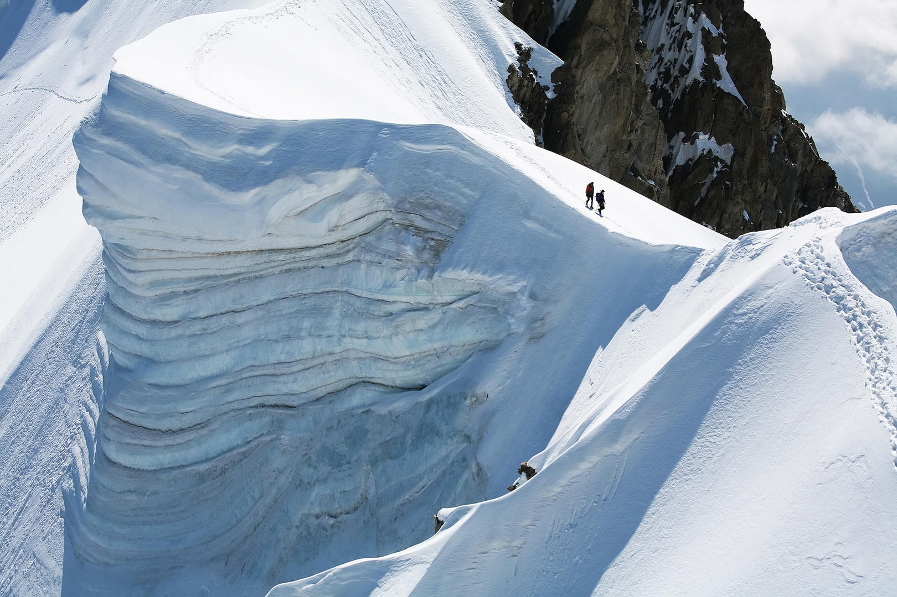

Wild Ethics
Leave It Wilder
Every route, every story, every photograph — made with one rule: the wild should be better for us having been there.
Wild Ethics

Reading a River: Access, Ethics, and the Joy of Wild Water
undefined
By Topic
The Adventurer's Responsibility
The WKND Wild Ethics
undefined
undefined
undefined
undefined
Places That Need Our Care

W Circuit: 9 Days, 115 km
A full account of the W Circuit in Torres del Paine — permit strategy, daily stage breakdowns, refugio conditions, and the one weather window that made it worth every hour of planning.

Lofoten Islands: Arctic Surfing and Swell
Seven days surfing between the Lofoten peaks — swell windows, cold-water preparation, and why Unstad produces some of the best Arctic waves in Europe.

Six Days Through the High Alps by Bike
Stelvio, Gavia, Mortirolo, Gavia again — a self-supported traverse of the highest road passes in the Alps with notes on resupply, surface conditions, and which climbs to ride at dawn.
Practical Steps for Every Adventurer
These are specific actions, not principles. The principles are upstream. These are what the principles look like on the ground.
This is not optional.
We take a hard line on this. Wild ethics are not a brand value — they are the condition under which we operate. The wild exists without us, indifferent to whether we show up or not, and it will survive our absence longer than our presence. The privilege of access comes with responsibility that is non-negotiable. Every person who visits a wild place either contributes to its protection or its erosion — there is no neutral ground. Documenting adventure without protecting the places where it happens is hollow. We refuse to separate the story from the ethic. That is the WKND pledge, and it is not up for revision. "The mountain doesn't owe you a summit. The river doesn't owe you a swim. We go as guests."